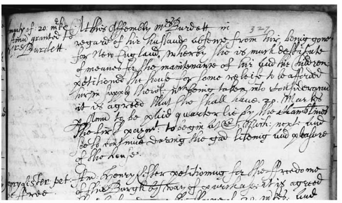
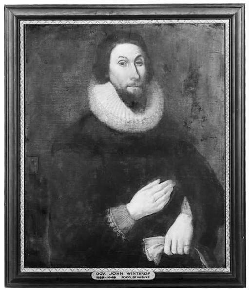

1994年8月1日，在诺福克和诺里奇档案馆 [1] 工作的一位管理人员打开一盏灯，建筑物随之爆炸了。开关里微小的电火星点燃了泄漏的煤气。工人被炸倒，但是活了下来。档案馆却没有。消防队员努力控制火势，工作人员设法挽救保存在那里的文献。当火最终扑灭的时候，三十五万册图书和一些历史记录已被烧毁，建筑物内部也已毁损。
为什么从这里开始呢？这一章和接下来的两章，旨在阐明历史学家怎样展开研究历史的工作。我们将利用原始证据，从历史中探索出一个真实的故事，一个从未被讲述的故事。历史学家的工作始于过去时代的资料和文献，诺里奇档案馆曾经是而且仍然是这些资料的贮藏之所（它也正巧位于我工作的城市）。不仅如此，当事物面临威胁——譬如一场火灾的时候，往往会看得更加清楚。幸运的是，幸存下来的文献要比被烧毁的文献多得多。但是火灾的确破坏了某些几乎同样重要的东西：诺里奇档案馆赖以运作的分类系统。幸存的记录被转移到新的建筑里，档案馆重新向业余爱好者和专业研究者开放。但在人们利用这些资料之前，诺里奇档案馆不得不重新编订目录，安排保存方式，并重新制定查找特定文献的程序。历史学家的工作从资料开始——但只能在档案管理员对那些资料进行分类、整理之后。
历史学家常常提到，被研究的事件发生之时或稍后形成的历史文献是“原始”证据（就像犯罪行为的“第一证人”）。“二手”资料指的是其他晚一些的作家的著作。不过，这只是一种有用的简单说法，并非严格哲学意义上的区分，因为二者之间的界限可能很难划分，而且“二手”资料也是它们自己时代的“原始”证据。
在储藏过去文献的意义上，档案馆已经存在了相当长的时间。至少从15世纪开始，诺里奇的公民就很注意将与自己历史有关的文献安全地储存、保管下来。这是因为旧文献是权力的表现，尤其是那些与土地所有权和法律权利有关的文献：出示一份旧（因而是权威的）文献作为证据，有助于赢得一场辩论。当然，在律师搜寻与委托人买房子有关的旧文献时，这一说法仍然是对的。但从18世纪前后开始，制度化的文献档案开始出于不那么明确的原因得到保存和管理，部分原因仅仅在于它们很有趣。诺里奇档案馆只是数以千计的档案收藏处中的一个。大多数国家都有国家档案馆，比如伦敦公共档案馆，或者巴黎国家档案馆。有些档案馆已经衰败并几乎被遗忘了，比如纽约市的一家，我听说无家可归的人有时就睡在其书架中间。还有一些是私人档案馆，属于家族、公司或宗教团体所有，历史学家必须得到特别许可才能使用它们。有些档案馆是关闭的、不允许使用，包括（直到最近）东德共和国的档案馆和梵蒂冈档案馆的一部分。偶尔也能在其他地方发现大批的资料。最近一位历史学家找到了许多14世纪的宗教文献，它们被存放和遗忘在一座意大利教堂的钟楼里。不过，这样的发现很少见，这些东西通常会以被关进某地的档案馆而告终。
档案馆不仅仅是仓库。它们是系统化的信息库，由专业人员照料和呵护着。这一点由于两个原因而显得重要。首先，过去的资料不是以内在一致的整齐模式保留下来的。只要想象一下，如果本书各页不是按照数字顺序装订在一起，而是杂乱一堆地交给你，会是怎样。需要很长时间才能弄清它在说些什么！档案管理员将过去的遗存之物按照某种顺序存放，以便其他人能够使用它们。其次，现存资料的数量非常庞大。仅诺里奇档案馆就收藏了大约两百万 份不同的文献。一位历史学家将它们全部浏览一遍，需要花费相当长的时间。作为替代，档案管理员花费时间编出一些被称为“查档指南”的东西。它们是文献目录，通常附有简单的内容提要，以便历史学家知道要让档案管理员把什么拿给他（她）。
那么什么是“资料”呢？令人惊讶的是，直到现时之前，它都是某种排他性俱乐部的物品：绅士学者对资料进行评估，就其准确性和“完整性”做出判断，得出适当的结论，同时评判资料中的观点是否公正。某种资料据说比另一种“更受欢迎”——因而被允许穿越历史编纂的坚固的橡木门。这些资料大多属于叙 述性 文献：编年记事、回忆录、政府记录、过去的史书。19世纪和20世纪期间，这个俱乐部大大扩张；资料开始包括更多的项目，诸如遗嘱、书信、买卖记录和其他财会账目、税收文件、法庭记录等。我们随后将会看到，更多的资料引发了更多的问题；而更多的问题又导向了更多的资料种类。
事实上，资料可以是任何为我们留下过去痕迹的东西。它可以是记录土地交易的一张契约，提供证人辩词的一个法庭判例，为不知名的听众所做的一次布道，关于书籍、股票、价格、货物、人口、家畜或信仰的一张清单，被遗忘的面孔的一张绘画或照片，书信、回忆录、自传或者涂鸦之作，展现其权力和财富的富人的建筑（或者呈现出另一面的穷人的住所），故事、诗歌、歌曲、谚语、下流笑话、感到厌倦的抄写员或灵巧的评注者写在页边的晦涩评论。资料可以是上千种东西；它可以是法官手册页面上的污点，这是拜被审讯者在致敬仪式中的千百次亲吻所赐。它是过去留下的痕迹。
让我们看看来自诺里奇档案馆的一份特殊文献和一份特殊证据。文献是1625至1642年间的《雅茅斯议会记事簿》。大雅茅斯 [2] 是诺福克的一个沿海城市，距诺里奇约二十英里。17世纪，这座城市由一个公民委员会或“议会”统治，《议会记事簿》记录了他们的讨论和决定。这里所关注的文献是保留下来的第六本记事簿（最早的日期可追溯到16世纪中期）。它是用皮革装订的一大册，长约三十公分，宽约二十公分，包括五百三十六张有编号的对开页和一些空白页。（对开页与普通页不同。我们按每一个页面编号，而17世纪的抄写员是按每一张纸编号。这样每一个对开页都有“正面”和“背面”，现在一般称为“右页”[正面]和“左页”[背面]。所以，五百三十六个对开页意味着这么多的正面和这么多的背面——总共有一千零七十二页。）纸页摸起来干燥而多皱，比现代纸张厚得多。这本书非常厚（大约十五公分），需要放在特制的垫子上打开以免书脊开裂。虽然《议会记事簿》没有目录或索引，但抄写员留有页边空白以做简短的概要注释，这样只看页边文字就能迅速找到条目。页边辅助工具的存在，表明《议会记事簿》是这座城市作为参考资料所使用 的东西，而不仅仅是用来填写和遗忘的。
特殊证据则是该书第三百二十七个对开页正面（右页）记载的一个条目，标注的日期是在1635年。页边写有“给伯德特太太每岁二十银币 [3] 补助金”。相应的正文写道：
历史学是从资料开始的。但正如我在前面所说，历史学家在探寻特定的证据方面常能有所帮助，只要有推动他们去追踪的动力。在这个例子中，有两个“起点”帮助我们找到这份证据。一是诺里奇档案馆里雅茅斯文献的目录，这使人们可以让档案管理员提供正确的卷册。二是来自一位同行历史学家的慷慨建议，她告诉我关于伯德特太太的那个条目可能很有趣。这是很重要的两个步骤，在每一本 历史著作中都存在类似的东西：将历史学家推向一系列特定资料的线索。历史学家在看到证据之前要做出选择和决定。所以这样说也许更为准确：历史学开始的途径之一 是资料。另一途径是历史学家本身：他们的兴趣、观念、环境和经历。
现在我们有了自己的证据。接下来怎么办呢？首先请注意历史学家必须具备的技巧。看看这份资料的照片，再看看上面的印刷版本。它的书法不是很清楚，拼写方式是古式的，某些术语我们也不太熟悉。必须对证据进行破译。这是回到过去的第一步，甚至在问“为什么”之前，首先要设法理解一位去世已久的抄写员写下了什么 。它的书法及其长环状的字母，是一种被称为“秘书体”的字体。书法在历史发展过程中发生了变化：中世纪的书法相当规则，因为大多数抄写员有充裕的时间来撰写文献。但文献中也充满了缩写，只有负责处理文献的、规模相对较小的抄写员群体才能通晓，而对现代读者来说却不那么清楚。随着识字能力的提高，文献的产生更加频繁，书法变得不那么整齐而且更具个人风格了。到17世纪晚期，当（至少在英国）基本的识字能力显著普及的时候，书法可能非常凌乱，因为没有受过多少正规训练的人们急切地把需要记录的东西胡乱写了下来。对书法的研究被称为“古文书学”，历史学家利用这种技巧，不仅可以译解古老的文献，有时还能确定它们的年代，因为书写模式可以跟特定的时期大致对应起来。另一些语言技巧对历史学家也很有用。有人学习现代语言，以便阅读外国历史学家的文献和著作。有人学习古代语言，譬如中世纪的拉丁语、古希腊语、古英语或中古高地德语，以便研究用那些语言写成的文献。很少有历史学家具备许多这样的技巧。相反，他们往往出于偶然和本人治史的选择而各有专攻。
信不信由你，《议会登记簿》里的书法非常规则、清晰。某些s看起来更像是f，某些r看起来像w，但是除此之外，它大概并不比一般医生的处方更难读。其中有几处缩写，抄写员没有写下整个单词，而是在上面划一道线，或者在上方写出一部分：例如，第六行的which写作wc h ，第八行的Chamblines（上面有一道线）表示Chamberlines（或者如我们所拼写的chamberlains）。其他的古怪拼写很容易译解：hir表示her，soe表示so，likening表示liking。17世纪的英语拼写尚未标准化，所以某些单词往往按照发音模式来拼写。

图15 《雅茅斯议会记事簿》摘录。注意左侧的页边注释和顶部右侧的对开页编号。
我们还需要对背景做一些解释。当时的“新英格兰”和现在一样，指的是其时正处于殖民化进程中的美洲东海岸。伯德特太太将被给予“银币（mark）”，这是一种古老的英国货币单位（二十银币可是很大的一笔钱）。“下一圣米迦勒日”的意思是“下一个圣米迦勒节庆”或“米迦勒节”，是在9月29日。我们已经提到这份文件是什么（ 一份市政府记录）了。总体而言，这份证据的意思现在应该清楚了：雅茅斯议会同意向伯德特太太每年支付二十银币，因为她的丈夫离开她前往美洲去了。
但它本身并不是“历史”。知道伯德特太太将得到一份年金也许很有趣，但到目前为止，它还缺乏一种语境以赋予其意义或重要性。联系到本书开头，吉扬·德让谋杀案或许是一个比伯德特太太的财政状况更令人激动的故事，但是我们看到，它也需要被置于更宏大的叙事中才能获得更多的意义。从《议会记事簿》中摘录出来的内容，为我们提供了建筑材料，已经锻造成型、备好待用，可是房子本身仍然有待建造。
但要建的是什么样的房子呢？历史学家需要决定他（她）打算建造的是什么，并弄清资料所提示和支持的又是什么。我们还应该搜寻哪些其他的砖块？我们可以从各个方面开始探讨。我们也许希望发现议会发放的其他年金，然后描绘一幅雅茅斯慈善事业的图景，在本例中我们可以仔细搜寻《议会记事簿》的其余部分（和其他卷册），然后或许会继续搜寻这座城市的其他市政记录。另一方面，我们也许想要查找人们奔赴新英格兰的其他例子。在本例中我们很快会发现，虽然《议会记事簿》各处都有零星的记载，但最好还是去找不同类型的资料，例如根据英国国王的命令制作的17世纪“有资格”前往新英格兰的人员名单。这份文献列出了开往美洲的不同船只的乘客名单，他们的年龄和职业，并简单叙述了他们为何选择离开英国。不同的资料具有不同的用途，有些是显而易见的，有些则不然。《议会记事簿》可用于对雅茅斯市政府的调查，但也能用来讨论社会、宗教、政治、性别，等等。
此外还有其他的问题有待解决。我们需要确定，比如说，我们正在考察的东西不是伪造品。在伯德特太太的例子中，这似乎不太可能：上述引文与其他条目整齐划一，用同样的书法写成，因而没有证据表明它是后来窜改进去的。除非我们认为整个《议会记事簿》——整整上千页的文字——都是伪造的，否则就没有理由不相信这份证据。不过，并非所有历史文献都是伪造的；有过著名的伪造品，比如受到洛伦佐·瓦拉批评的《康斯坦丁赠礼》，以及最近臭名昭著的伪造的《希特勒日记》，它使现代一位非常优秀的历史学家受到了愚弄。但除非人们要研究的是著名的人物或事件，否则伪造品并不常见（因为没有这样做的动机）。
伪造品：经常出现伪造品的一个文献领域是中世纪的寺院记录。僧侣们会有规律地伪造大量特许状，以展示寺院的权利和财产。这并不总是意味着直截了当的不诚实：相当多的伪造品是为了造出“本该”存在的文献，因为此前已经被习俗所接受的权利，后来要求文献上的“证据”。
历史学家也被教导要考虑到资料中的“偏见”。不过，这里我们需要很认真地想一想。我在前文所描述的产生资料的“绅士俱乐部”的原因，部分就在于过分地关注“偏见”。寻找“偏见”（作者的偏见和他们歪曲叙述的方式），也许暗示着可以找到一种“无偏见的”立场。这是一个问题。如果“偏见”意味着每个人的特有风格——它必定是这样，那么就不存在“ 无偏见的”文献。有些资料很坦率地表达了它们的观点和偏见，人们当然要加以考虑，而另一些资料可能需要非常仔细地探讨其中的假设。比如说，上面的引文看起来很直截了当——但是请注意，它没有告诉我们伯德特太太的名字。这或许不仅是一个偶然事件；对抄写员和议会的假定还要进一步探讨：在他们看来，哪些细节足够重要，需要记录下来。但要注意一件事情：已经确认的这一“偏见”并不需要“抛弃”；相反，它是我们可以利用 的东西，可以告诉我们17世纪关于妇女及其地位的看法。没有“偏见”（它总是可能出现），就不需要历史学家了。所以“偏见”不是需要发现并加以根除的东西，而是有待搜寻并加以利用的东西。
不过，我们还得考虑文献所能支持的和不能支持的是什么。《议会记事簿》是为了某种目的，而不是为了我们的爱好和乐趣写下来的：它的存在是为了记录这个城市所做的重要决定。我们需要考虑的不仅是它所说出的，还有它所没有 说出的。例如，虽然我们知道议会决定给予伯德特太太一份年金，但我们不知道这一决定是轻易做出的，还是经过了数小时的争论。我们也不知道伯德特太太是否在场（她被提及曾向议会“申请”，但这也许是指她在开会之前向他们提出了请求）。除了她丈夫不在身边和她的贫困之外，我们不知道他们为什么要给她一份年金。历史学家需要知道资料的细微差别、说出的与未说出的之间的隔阂，以及它们的韵律和中间的省略。
有时候据说“资料自己会说话”。这不是真的。摘自《议会记事簿》的那段引文，迄今还几乎没有说出什么。但它或许发出了一阵温和而唠叨的嘟哝声：谁是伯德特？他为什么要去新英格兰？伯德特太太和她的孩子后来怎么样了？要回答这些问题，我们显然需要找到关于伯德特一家的其他参考材料。于是我们决定了我们探寻的特定道路——从起点开始，将资料所提供的和未提供的以及我们所关注的，一一联结起来。
《议会记事簿》中至少还有五处提到了伯德特，通过浏览每一页的页边评论可以找到它们的位置。这为我们的画面增添了些许内容。1633年，一位传教士“乔治·伯德特先生”因为“没有在耶稣的名字前鞠躬”，被一个叫马修·布鲁克斯的人报告给议会。这里有一个小背景需要说明。当时英国在教会统治及改革的性质问题上存在着紧张气氛。布鲁克斯信奉一种温和的新教，支持宗教仪式、循规蹈矩和国王对教会的控制。伯德特则显得更加激进，他反对国王控制和宗教仪式，所以在教堂里没有向十字架行奉承之礼（“在耶稣的名字前鞠躬”）。由于布鲁克斯的指责，伯德特被短期取消了传教士资格，但（第二次记载告诉我们）随后这一资格又被诺里奇主教恢复。然而，1635年伯德特再次因为他的布道（似乎在宗教上和政治上都有敌意）而被取消资格，《议会记事簿》提到了找一位新传教士的必要性。结尾另两处告诉我们，布鲁克斯先生想出价接管伯德特居住的房屋，但该财产后来以每年十二镑的价格租给了一位克雷恩先生。《议会记事簿》中最后一次提到的就是伯德特太太的年金。
这样，把更多的材料放到一起，我们可以开始构造一幅关于伯德特一家及其发生之事的图画。为了让这幅画有意义，人们需要一些背景信息（英国的宗教紧张、雅茅斯的地方政治），这里我们借助的是其他历史学家的著作。这一规律没有例外：历史学家依赖彼此的著作，与依赖自己对历史资料的调查一样多。如果我们在关于伯德特的证据中发现些什么，对已经讲述的现代早期英国的真实故事形成了挑战，那当然很好，但是忽略那些已经提供给我们作为向导的东西，则是愚蠢的。
随着伯德特到美洲去——这是我们故事的下一个部分，我们需要依赖跟新英格兰有关的文献。当然，有大量各不相同的资料从美洲殖民地时期保留至今。遍索这些资料以追寻伯德特的踪迹会花费很长的时间，那么一个历史学家该怎么做呢？好了，有时历史学家恰好就是这样做的：辛苦而单调地搜索每一种能够找到的文献，寻找对他（她）关注之事的记载。在这里，单调是一个关键词。相当一部分历史学的工作是单调的，历史学家的本领之一就是面对这种单调继续工作，期待着那不寻常的发现的时刻。战争有时被描述为漫长的无聊时期，但会被激动人心的短暂时刻所打断。历史学常常与之相似，虽然的确更加安全。
但历史学家的乐趣在于某些事情被 发现或揭示的时刻。当然，通常历史学家会同时寻找不止一件事情（为了寻找伯德特而阅读所有的殖民地文献是没有什么意义的，如果随后有人想要寻找另一个人，就不得不把它们再读一遍）。有时候，他们所寻找的东西远比一个人的姓名更难形容：它也许是一个特殊的短语或谈话方式，一种只有后来的统计学分析才能揭示的证据的显著风格，或者一个无法准确测定但在长时段中清晰可见的变化过程。

图16 约翰·温思罗普，马萨诸塞总督
那么，我们怎样在新世界找到伯德特呢？我们可以看看现在能找到的各种家谱查询工具。我们可以查阅一本美国传记词典，因为伯德特有可能留下永久性的记录。我们可以求助于关于美洲殖民地的现代著作的索引，期待其他历史学家已经沿着我们的道路走了一段（虽然仅仅指望它带有些懒惰的心思，因为第一次走这条路是乐趣的一部分）。或者我们可以着眼于某些关于新英格兰的最显著、最丰富的证据资料，看看伯德特是否会在不经意间突然出现……
他的确出现了。如果去看看17世纪的《约翰·温思罗普 [5] 笔记》，我们会发现许多关于伯德特的记载。约翰·温思罗普是17世纪三四十年代的马萨诸塞总督，他既是一位关键性的历史行动者，又是一位历史记录者。他最初来自萨福克郡 [6] ，1630年3月来到美洲，乘坐的是“阿尔贝拉号”。他的《笔记》只是关于新英格兰的大量证据中的一部分，这些证据合在一起以“温思罗普文件”之名而为人所知（并且出版）。近年来《笔记》被编辑出版，包括一份多卷的索引，这对我们的研究极有帮助。大多数历史学家不仅利用原始档案文献，也会利用已出版的资料。虽然通常说来最好是看原始文献，但这种愿望常常超越了时间、耐心和研究经费所允许的限度。无论如何，阅读已刊印的版本有其特殊的优势，因为这通常意味着别人替你做了大部分艰苦而枯燥的工作，让你能从索引中摘取柔嫩的果实。
它们就是这样的果实！根据温思罗普的记载，伯德特于1638年11月出现了，他待在一个叫匹斯卡塔夸的地方。他被温思罗普记录下来是因为他再次陷入了麻烦——他为被总督逐出马萨诸塞的人们提供庇护。美洲殖民地是一个充斥着政治斗争的地方，那些仍然坚定地效忠于祖国的人与那些争取更大的宗教和政治自治的人之间存在着分裂之势。作为马萨诸塞的统治者，温思罗普站在后一阵营；伯德特看来却属于前者。
1638年12月，温思罗普做了如下记载：
让我们在这里暂停片刻，想一想证据中的奇特之处。首先，我们需要确定其他这些人是哪些人。稍稍挖掘一下索引，发现希尔顿是另一位马萨诸塞的政治家，昂德希尔将要领导一次反对荷兰殖民地的叛乱。请注意，温思罗普在他自己的笔记里以第三人称指代自己，这也许说明他在写一份可能会被其他人阅读的半官方记录。我们在此无法窥测他的内心想法，只知道他选择 记录什么。我们还得问自己，温思罗普是怎么知道他的信被截获，知道伯德特写给英国的信的——这里找不到答案。最后，这里有温思罗普对他本人的书信的描述：它用这样一种方式来写，以至于发现这封信的人不会对他造成伤害。据我们所知，这封信并不存在，但是想象一下如果它确实存在的话，历史学家将（没有《笔记》的记载）不得不破译一封大概是言在此而意在彼的信件。资料并非透明的、单纯的文献。它们是在特定的环境中为特定的读者所写的；就温思罗普的书信而言，一方面是为特定的读者希尔顿先生，另一方面，表面上则是为疑有的读者伯德特和昂德希尔而写的。
温思罗普笔记里的另一些内容揭示了伯德特与他本人关系的持续破裂，包括1639年5月发现的伯德特写给坎特伯雷 [7] 大主教威廉·劳德的信，信中对殖民地的自治企图进行了谴责。这封信的复制品在其他文献（伦敦公共档案馆里的国家文件）中被保存下来，这样我们可以将其联系起来为证据提供支持，从而更加确信温思罗普的记载。到1640年3月，伯德特显然已经成了匹斯卡塔夸的“统治者和传教士”（这个事实是在伯德特假装刚从英国来此地传教时被记载下来的）。最后，1640年夏天，温思罗普告诉我们从英国来了一个叫托马斯·戈吉的律师，他去了伯德特所在的地区。温思罗普写道，戈吉在那里发现一切都混乱不堪，因为伯德特先生统治着一切，他放任自由地统治以逞其贪欲，因傲慢和通奸而变得臭名昭著；现在邻居们发现戈吉先生很乐于改革现状，当他[伯德特]被抓起来并必须出庭时，他们对他进行指责，给他制造了这些丑闻。
伯德特被罚款三十镑，于是：
再次稍作停顿。给我们提供这段叙述的温思罗普的记载，声称它是逐月记录他对马萨诸塞的统治。可最后一段话里的细节似乎表明他是在事后写下来的——它告诉了我们伯德特返回英国之后所发生的事情。这些事肯定是在庭审案件过后一段时间才发生的，而且相关消息（越洋）传回马萨诸塞肯定还要再花费许多个星期。此外，“后来他因为支持保皇党”听起来很像是英国内战中发生的冲突：克伦威尔 [8] 的圆颅党 [9] 与国王的保皇党相对抗。可是这场战争直到1642年才开始。1640年怎么能知道伯德特的未来呢？除非这段记载是后来所写的。和每一份历史证据一样，温思罗普的《笔记》在使用时需要谨慎、留意。文献很少打算欺骗历史学家，但它们时刻都会愚弄那些粗心的人。
无论如何，现在我们有了另一个关于过去的真实故事，它是从文献资料中拼凑而来的：乔治·伯德特——一位清教传教士和可能的浪荡子，怎样在雅茅斯失去地位，抛妻别子前往新世界，在那里出人头地，孰料又再次跌落，回到英国在内战中支持国王，最后被投入监狱。这个故事是在何地、何时结束的呢？它结束于我们的资料或动力耗尽之时，但在某种意义上总是结束于后者，因为乔治·伯德特的故事还可以和昂德希尔上尉的故事、托马斯·戈吉的故事、英国宗教改革的故事、殖民地自由的故事或者英国内战的故事联系起来。从目前的情况来看，它是一个相当令人满意的故事。但我们不要忘记，它仍然存在漏洞。回到雅茅斯，我们不知道伯德特太太怎么样了（虽然我们可能希望她和她的孩子没有乔治也能过上长久而快乐的生活，因为我们能在17世纪末雅茅斯的公民名单中找到姓“伯德特”的人）。我们不知道温思罗普究竟是怎样获得大部分信息的，或者他是否说出了他所知道的所有事情。最糟糕的是，我们并不完全了解乔治·伯德特，他似乎具有让人着迷的矛盾性：一个抛弃自己家庭的宗教徒；一个教会改革者，因为拒不服从国教惯例而被逐出雅茅斯，来到新世界后却站在国王一边，并在英国内战中回国为国王而战；一个热烈的传教士，却因“傲慢和通奸”而遭到邻居的谴责。我们拥有他所写的两份材料：一份是上面提到的写往英国的信，这封信里对马萨诸塞的政策进行了抨击；另一份是此前写给劳德大主教的信（也保存在国家文件中）。这封较早的信所署的日期是1635年12月27日，这封信寄自新英格兰的塞勒姆。在这封信里，伯德特似乎解释了他第一次前往新英格兰的原因 ：
这封信通篇的语气很清楚：伯德特想向大主教洗清自己的罪名，大概是为了在某个时刻能够回来。细节这么少，不仅是因为伯德特华丽而浮夸的文风。信中提到“恶毒起诉”的“难以承受的费用”，似乎表明有一个庭审案例：的确，通过查找国家文件一览表（一种非常详细的检索工具）我们发现，1634年和1635年，伯德特因为宗教违法而在高级委员会的法庭上被起诉。这样我们就进一步了解了伯德特离开的原因，但还不能回答所有的问题。我们仍然没有真正明白，他为什么选择离开自己的家庭，而不是在国内为自己辩护。在一个特定的时刻，资料陷入了沉默，历史学家必须开始做些猜测——也就是说，对文件进行解释 。
我们没有关于乔治·伯德特对其妻子和孩子的感情的叙述，但我们被告知他的离去使他们“生活贫困”，他在新英格兰受到了“通奸”的指控。那么，我们是否可以猜测伯德特的婚姻状况很不好呢？这也许是一种合理的猜测——它与证据相符合——但它仍然只能是一种猜测 。那么伯德特返回家乡之后的活动又是怎样的呢？如果说伯德特选择为国王而战表明了他心灵上的变化，我们就会指向伯德特在殖民地的经历：一个勇敢的新世界，努力将自己从古老国家的控制下解放出来。或许是伯德特幻想的部分实现，让他对真实的现实感到惊恐？抑或是我们的传教士一到新家就开始寻找回国的机会，所以把改变效忠对象、反对殖民者而支持君主作为一种策略？二者都是合理的猜测，人们都可以稍加采纳。我们无法确切地知道，但我们可以沿着叙述的轨迹推进，我们已经建起了这些小桥梁。不过我们应该清楚这些桥梁是我们自己建造的。我们当然可以引用证据来支持它们，但不是以否认其在建筑中所扮演的角色为代价。历史学家不得不建起这些小桥梁，但他（她）不能够也不应该忘记是谁为了什么把它们放在那里，或者忽略每座桥梁都需要付出一些费用：沿着一条令人满意的道路继续前进的代价，就是也许会阻塞其他可能的道路或使之无法通行。
因为我们还可以做出其他的猜测。也许伯德特深深地爱着他的妻子，离开孩子他感到非常痛苦，希望带着他们一起走，只是因为他们不愿意或者迁居的费用不菲而未能如愿。温思罗普关于伯德特纵欲的报告也许只不过是对政敌的诽谤，正如伯德特在给劳德的信中所说，雅茅斯那些反对他的言论都是谎言。英国内战史学家告诉我们，议会和王室双方并不是以宗教为基础平等区分的，所以也许伯德特并不认为他所选择的效忠对象有什么可奇怪的。人们可以沿着这一脉络走下去，但最终必须足够坚决地做出一个选择、跟随一条道路、进行一种猜测，以便继续前进。然而，每一种猜测都应该同样被记住。不停地做出太多的假设，也许会让我们迷失。
资料不会“自己说话”，它也从来没有这样做过。它们代表别人说话，那些已经死去、永远消逝的人。资料也许具有复调的声音——可以指示方向，提出问题，引向更多的资料。但是它们缺乏意志：当历史学家使之复活时，它们是有生命的。资料是一个 起点，但历史学家在此之前和之后都要在场，并使用技巧，做出选择。为什么是这份 文献而不是另一份？为什么是这些 契据而不是那些？而且，为什么要看契据而不是审判记录？为什么要研究政府报告而不是日记？要探讨哪些问题？采用哪些途径？
但这并不是在暗示，真实故事的方向完全是由历史学家的心血来潮所决定的。文献指示特定的方向以供追随，就像我们搜寻伯德特时所表明的那样。资料还会让人惊讶，在揭示以前未被考虑的新途径上设置障碍。阅读温思罗普的笔记，匆匆一瞥即将我们引向下面那些被探讨的问题。所以紧接着温思罗普对伯德特的第二次记载，我们读道：
拒绝在耶稣的名字前鞠躬——像伯德特一样——吸引了人们的目光，但它也将魔鬼、妇女和塞勒姆联系起来（17世纪后期，塞勒姆因为巫术案而臭名昭著，许多妇女在那里被处死）。这个小疑难被理解之后，人们又在浏览对伯德特的下一次记载时发现了另一个例子：一名妇女在波士顿被绞死，她“被撒旦附体，他劝她（被她视为是上帝的启示而实际是魔鬼的诱惑）扭断自己孩子的脖子，她根本没有想到未来的不幸”。令人恐怖但也让人着迷……所以人们开始寻找其他的例子。一个新的故事就这样开始了，从起点被引向资料发出的声音与历史学家的兴趣之间的某个地方。
历史学家不是简单地“从档案中报道”。要是他（她）这样做，很可能只是在重复半真半假或者混乱——如果并非彻头彻尾的谎言的话。因为资料并不单纯，它们的声音与特定的目标一致，事实上也与特定的结果一致。它们不是过去现实的镜子，而是它们自身的事件。我们会猜测，约翰·温思罗普不喜欢乔治·伯德特，他（通过另一个声音）告诉我们伯德特是一个通奸者。这是否完全属实呢？不管它是不是真的，温思罗普为何决定把它写下来、记下备案呢？将某件事情诉诸文字——尤其是在本世纪之前的任何时候——应该被视为一个非同寻常的事件，因而需要做出解释。温思罗普的敌意（或许是一种政治上的而不是个人的敌意）会使他提供的证据失效吗？如果是这样，我们会抛开乔治·伯德特的真实故事，把他托付给沉默的过去吗？历史学家做出了选择，继续讲述这个故事。
总是会有新的问题可问。为什么呢？因为新的观察方式，因为此前或此后所见的其他事情，因为不同的探索途径。但首先是因为存在着缺漏、空白、省略和沉默。资料不会说话，不会讲出一切。如最近一位法国历史学家所指出的，这既是历史的不可能性所在，也是其可能性所在：以完全真实为目标的历史永远无法实现（只能是一个真实的故事 ），因为无数的事情仍然无法得知；但正是这一问题容许——或者不如说要求——过去成为一个研究 领域而不是一个不证自明的真实。如果在揭示过去发生之事的过程中不存在问题，那就不需要历史学家（无论是职业的还是业余的），因而也不需要历史了——只需要没有争议或问题的“发生之事”。历史以资料为起点，但也以资料内部和资料之间的分歧为起点。当诺里奇档案馆被烧毁时，这可能是一个悲剧。事实上，那里保存的大多数更古老的文献幸存下来了，虽然大火确实毁掉了无法替代的报纸和照片。我在本章开头提到，当事情面临威胁时往往会看得更加清楚。那么，也许现在揭示了另一件事情：档案必须被烧毁（当然是在象征意义上），历史才能得以发生。我们必须拥有资料——我们也必须拥有沉默。